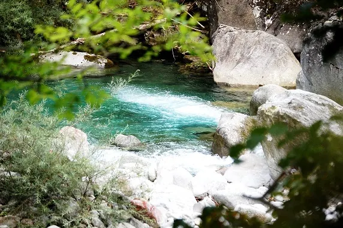

Galaktyczna Przystań Zdrowia zaprasza serdecznie na wyjątkowe warsztaty wyjazdowe w najpiękniejsze okolice w Szwajcarii - do okręgu Ticino, przy granicy z Włochami. Ciepły klimat i bujna roślinność, różnorodność kwiatów i dostęp do nieskalanej przyrody to cechy tych miejsc. Jak mawiają sami Szwajcarzy- to perełka Szwajcarii.
„Szwajcarska przygoda-kąpiel w energii serca” to 5 dni, podczas których przeżyjesz niezapomniane chwile otwierając łagodnie swoje serce na miłość i dobro. To czas wspólnych rytuałów oczyszczania, doceniania siebie wzjemnie, pracy z przekonaniami, radosnych zabaw i ćwiczeń- indywidualnych i w grupie. To czas kontaktu z dziewiczą przyrodą, krystalicznie czystą górską wodą, słońcem, lesistymi przepięknymi Alpami. Oczyszczanie w górskich dzikich potokach, nad wodospadem, medytacje na uroczych, skalistych plażach.
Masz jedyną, niepowtarzalną okazję, by wewnętrzną pracę ze sobą przeprowadzić w jednym z najbardziej pięknych i zjawiskowych miejsc. Energia gór, pobliskiego Jeziora Lago Maggiore oraz duch lasów, łąk i doliny Valle Verzasca z krystaliczną, lazurową i szmaragdową wodą zachwyci najbardziej zamknięte serca. ZAUFAJ. Jeśli poczujesz, że to miejsce przemawia do Ciebie - napisz do organizatora jak najszybciej, bo pobyt planowany jest już na sierpień.
Warsztaty będą prowadzone przez wieloletnią trenerkę pracy w przestrzeni serca. Dzięki wiedzy, ale głównie własnemu doświadczeniu doszła ona do widzenia i czucia aury oraz energii wokół. To niesamowite, wielowymiarowe „narzędzie” pracy własnej i z klientem. Obecnie zdolności intuicyjnego interpretowania szerokiego spektrum zjawisk życiowych służą Wam pomocą doradczą i terapeutyczną. Masażystka ajurvedy, uzdrowiciel praniczny i duchowy. Poprowadzi Cię przez tajniki Twojego psyche, ciała i duszy byś dotarł do swojego boskiego Źródła, swej wewnętrznej prawdy i mocy.
Uczestnictwo to głęboka podróż do głębi siebie, czułe spotkanie ze sobą samym oraz radość doświadczania siebie na nowo. Niech Twemu ciału zostanie przywrócona Jaźń i czucie. Niech miłość w Tobie trwa.
Prowadzący i główny organizator : Monika Grzegorczyk
zapisy, kontakt: 508-566-867 lub monika.ajurveda@wp.pl
……………………..……………………..……………………..……………….
Warsztaty są tak skalkulowane by cena odpowiadała polskim realiom. Jak wiecie w Szwajcarii wszystko jest 4 x droższe. Macie więc specjalną okazję zasmakować przygody, samorozwoju, odwiedzenia niesamowitego miejsca i doświadczenia wspaniałej atmosfery dzięki tańszej grupowej organizacji.W naszej przestrzeni będzie bliskość jeziora, rzek, gór, ale nieopodal dostępne również sklepy z żywnością, bar, restauracje i niewielkie miasteczko cudownie przyjazne dla turystów.
Szczegółowy plan, adresy miejsc, droga dojazdu, koszty będą wysyłane indywidualnie na maila osobom zainteresowanym.
Dojazd odbywa się we własnym zakresie i na koszt własny. Organizator pomaga i tłumaczy jak dotrzeć na miejsce. Możliwy odbiór osób z Bellinzony. Gwarantowany odbior osób z Locarno.
Miejsca: Szwajcaria, okręg Ticino,
lokalizacja: Gordola-spanie, Valle Verzasca i okolice- zwiedzanie, zajęcia. Mieszkamy w budynku nad samą rzeką w pięknie położonym domu na skarpie z tarasem nad skałami.
W cenie zapewnionych jest 6 noclegów, śniadania i organizacja zajęć. Noclegi będą zbiorowe - w lokalu o dwu pokojach i mają dwie opcje: 2 miejsca do spania są na szerokim łóżku, 1 miejsce na łóżku rozkładanym, pozostałe na dywanie na karimatach. Wymagane śpiwory. Dostęp do kuchni, łazienki. Przy większej liczbie osób zakwaterownie w tym samym domu inny lokal lub w poblizu. Miejsca spania dostępne w ramach kolejnosci zapisu-kto pierwszy ten może skorzystać z wyboru.
W dole pod domem rzeka, mała urocza plaża- tam może odbyć się cześć zajęć - zależy od pogody i naszych ustaleń, procesów. Rozlewisko wody choć zimne-górskie pozwala także trochę pływać. Za budynkiem nieopodal góry. Jakieś 5 min dalej jadłodajnia-tam będziemy sie stołować. Możliwe też obiady w terenie, gdzie akurat będziemy lub dowolnie jak kto chce np. nad jeziorem-bo też jest blisko.
Termin: 11.08.2017-16.08.2017.
Przyjazd poprzedniego dnia wieczorem na nocleg, łącznie 6 noclegów. Możliwość dokupienia 1-2 noclegów celem wydłużenia pobytu.
Wspólne śniadania. Obiady raczej w terenie. Kolacja własna-dostęp do kuchni na kwaterze.
Ubezpieczenie, dojazd,obiady, kolacje, zakupy własne, opłaty lokalne, bilety komunikacji lokalnej - koszty we własnym zakresie.
Przemieszczanie:
Poruszamy się pieszo i komunikacją lokalną. W zależnosci od czasu przybycia na miejsce zgrywamy zajęcia. Wstępna propozycja jest taka by zajęcia rozpoczeły się od 11 sierpnia i trwały przez 4 dni, ostani dzień na zwiedzanie. Ale możemy też przestawic - zależnie od warunków lokalnych, pogody. Zajęcia mogą być połączone z przebywaniem w naturze, nad wodą, w górach.
Koszty: 1570zł przy wpłacie zaliczki do 30.06.2017
1700zł przy wpłacie zaliczki do 15.07.2017.
rezerwacja miejsca:
-zaliczka bezzwrotna w przypadku rezygnacji z winy uczestnika: 500zł
-dopłata reszty do 30.07.2017 ( w przypadku braku terminowej wpłaty miejsce moze przepaść).
Szczegółowy program jest jeszcze dopracowywany. Będzie dosyłany na maila dla zainteresowanych.
Na ten moment określę, iż nasze działania będą się koncentrowały na ćwiczeniach (indywidualnych i w grupach), metodach, technikach, wykładzie, ekspresji manualnej, ruchowej, medytacjach, relaksacjach, prostych masażach prowadzących do połączenia z wewnętrznym boskim Źródłem. Praca z boską miłością i wdzięcznoscią, wybaczeniem, przekonaniami, intencją, wizualizacją, oczyszczeniem pozwoli na odkrycie na nowo swojej własnej przestrzeni serca i uaktywnienie jej.
Doświadczysz pewnego rodzaju konfrontacji ze sobą, uświadomisz sobie niezwykle ważne dla Ciebie aspekty duchowe i uwarunkowania fizyczne, poznasz swoje mocne i słabe strony. Znowu odczujesz dobro, spokój i harmonię. Przestrzeń Twojego serca czeka by ją otworzyć ponownie, tak by na koniec turnusu móc otulić Cię czułą miłością i byś pokochał na nowo każdą czastkę siebie.
……………………..……………………..……………………..…………………
Podczas turnusu sesje indywidualne bioenergetyki oraz rysunek aury z 15% zniżką.
Pozdrawiam Kochani
Prowadzacy : Monika Grzegorczyk - bioterapeuta, jasnowidz, masażysta ajurvedy.
Jest samą sobą, która odnalazła swoje szczęście i wewnętrzną radość. Od 2010r jest dyplomowanym bioenergoterapeutą. Od 2012r certyfikowany uzdrowiciel praniczny-ukończyła: kurs podstawowy, zaawansowany z uzdrawiania pranicznego kolorami wg. Choa Kok Sui oraz psychoterapię praniczną w Centrum Uzdrawiania Pranicznego i The Institute Mind Self Yoga. Certyfikowany praktyk metody Soul Body Fusion. Od 2013r. akredytowany przez Kuratorium Oświaty masażysta masaży orientalnych i ajurvedyjskich. Praktyk huny, metod wizualizacyjnych, podstaw zielarstwa, pracy z dźwiękiem mis tybetańskich. Artysta - maluje i prowadzi zajęcia z malowania obrazów energetycznych, uzdrawiających, projektuje i tworzy mozaiki terapeutyczne. Jasnowidz -doskonale odbiera energie otoczenia i osób, rysuje Rysunki Aury i interpretuje je. Komunikuje się energetycznie z przyrodą, zwierzętami-prowadzi sesje łagodnego łączenia się. Od 2009r. prowadzi cykl autorskich warsztatów na temat samouzdrawiania, zdrowego stylu życia pod nazwą: „Życie wg boskiego projektu”. Prowadzi konsultacje duchowe i prorozwojowe. Nadal z pasją i zachwytem podnosi swoje kwalifikacje zawodowe, uczestniczy w warsztatach i szkoleniach,ale przede wszystkim rozwija swoje odczuwanie i przestrzeń serca. Prowadzi praktykę uzdrowicielską i konsultacyjną w Łodzi oraz na odległość do każdego miejsca.
Zapisy, kontakt w sprawie turnusu: 508-566-867 lub monika.ajurveda@wp.pl
wiecej informacji o działaniach Galaktycznej Przystani Zdrowia:
www.galaktycznaprzystan.pl
serdecznie zapraszam :)))
……………………..……………………..……………………..……………….
tu jeszcze kilka wyszukiwarek dla podróżnych, pomagających “jak dojechać do…”
ostatnia stronka jest tylko o szwajcarskich alpach!
http://wikitravel.org/en/Main_Page